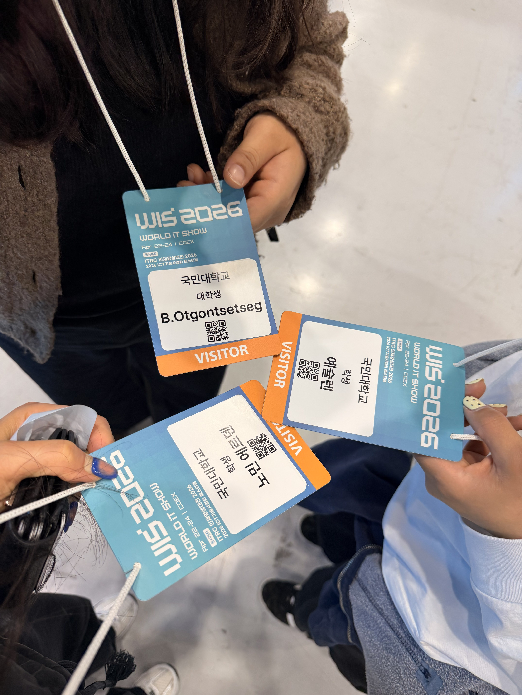
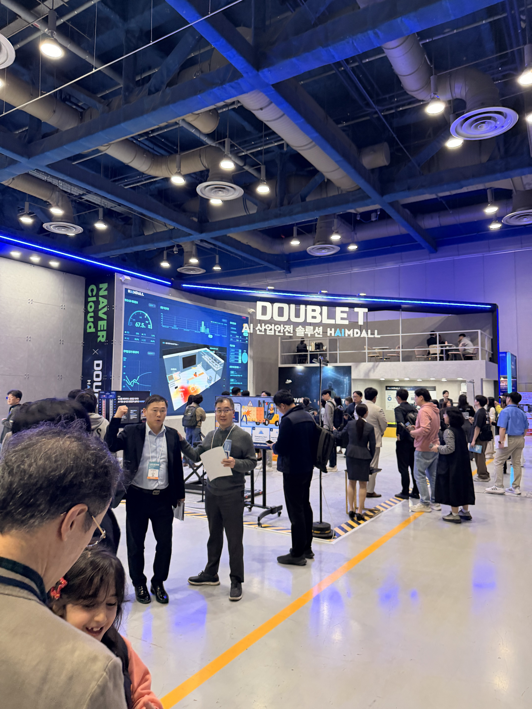
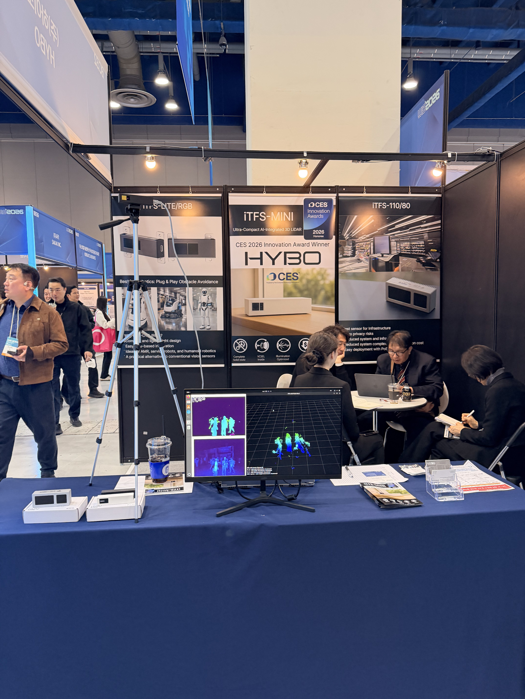

2026 World IT Show 관람 소감문
이름은 익히 들어왔지만 직접 방문하는 건 처음이라, 어떤 것들을 볼 수 있을지 막연한 설렘을 가지고 코엑스를 찾았다. 뉴스나 유튜브에서 접하던 기술들을 실제로 눈앞에서 볼 수 있다는 것만으로도 충분히 기대가 됐고, 막상 전시장 안에 들어서니 끝이 안 보일 정도로 펼쳐진 부스들이 그 기대를 더욱 키워줬다.

국내 최대 규모의 ICT 종합 전시회
올해 World IT Show 2026의 주제는 "Beyond Idea, Into Action: AI moves Reality"였다. 삼성전자, LG전자, SK텔레콤, KT, 카카오를 비롯해 17개국 460개 기업과 기관이 참가한 국내 최대 규모의 ICT 종합 전시회였다. 숫자로만 들으면 크다는 느낌이 잘 안 오는데, 실제로 전시장 안을 걷다 보면 어디서부터 봐야 할지 막막할 정도로 규모가 컸다.

피지컬 AI, 현실 속으로 들어온 기술
올해 전시의 핵심은 단연 피지컬 AI였다. Robotics & Intelligent Mobility 존을 중심으로, SK텔레콤의 AI 인프라 서비스, KT의 산업별 AI 전환(AX) 서비스와 6G 비전, 마음AI의 4족 보행 로봇 '진도', 농업용 AI 트랙터를 선보인 대동 등 다양한 기업들이 AI가 물리적 현실 속으로 들어오고 있음을 보여줬다.

그중에서도 로봇 관련 전시가 가장 인상 깊었다. 화면 속에서만 보던 4족 보행 로봇이 실제로 눈앞에서 움직이는 걸 보니 신기하면서도 묘하게 낯설었다. 저게 실제로 현장에서 쓰인다고? 하는 생각이 먼저 들었는데, 설명을 듣다 보니 이미 일부 산업 현장과 공공기관에서 도입이 진행되고 있다는 걸 알게 됐고, 그제서야 이게 먼 미래 얘기가 아니라는 게 실감났다.
그래서 나는 무엇을 잘해야 하나
전시장을 걷는 내내 신기함과 동시에 복잡한 감정이 함께 들었다. 기술이 이렇게 빠르게 발전하는 게 흥미로우면서도, 이공계 전공자로서 '그래서 나는 뭘 잘해야 하나'라는 생각이 계속 따라붙었다. 전시된 기술들이 대단하면 대단할수록, 내가 지금 배우고 있는 것들이 졸업할 때쯤이면 이미 AI가 다 하고 있는 건 아닐까 하는 생각도 솔직히 들었다.
그런데 전시를 다 돌고 나서 드는 생각은 조금 달랐다. 저 기술들을 기획하고, 문제를 정의하고, 실제 현장에 적용될 수 있도록 연결하는 건 결국 여전히 사람이 하는 일이라는 것이다. 멋진 로봇도, 정교한 AI 모델도, 누군가 어떤 문제를 풀겠다는 생각에서 출발한 것이고, 그 생각의 시작점이 되는 사람이 되는 게 중요하겠다는 생각이 들었다. 기술 자체보다 기술로 무엇을 할 것인가를 고민하는 능력이 앞으로 더 중요해질 것 같다는 느낌, 이번 전시에서 가장 크게 얻어온 것이다.
좋은 기술은 불편함을 해결하는 데서 나온다
개막 첫날에는 AI 기반으로 음성을 자동 분리하고 자막을 생성하는 플랫폼을 개발한 가우디오랩이 대통령상을 수상하기도 했다. 거창한 기술처럼 들리지만 생각해보면 영상 편집, 방송, 교육 등 실생활 곳곳에서 쓰일 수 있는 기술이다. 결국 좋은 기술은 어렵고 복잡한 게 아니라, 실제 사람들의 불편함을 해결하는 데서 나온다는 것을 다시 한번 느꼈다.
관람자가 아니라 만들어가는 사람으로
코엑스를 나오면서 전시장 안에서 봤던 장면들을 떠올려봤다. 부지런히 움직이는 로봇들, 대형 스크린에 펼쳐진 미래 기술 시연, 줄 서서 체험하는 사람들. 이 모든 게 불과 몇 년 전만 해도 상상 속의 이야기였을 텐데, 이제는 전시장에서 직접 눈으로 볼 수 있는 현실이 됐다. 그 변화의 속도가 놀랍기도 하지만, 그 한가운데 있다는 것이 어떤 면에서는 꽤 흥미롭다는 생각도 든다. 앞으로 이런 흐름을 좀 더 가까이에서, 수동적인 관람자가 아니라 만들어가는 쪽으로 참여할 수 있는 사람이 되고 싶다는 다짐을 하며 전시장을 나왔다.